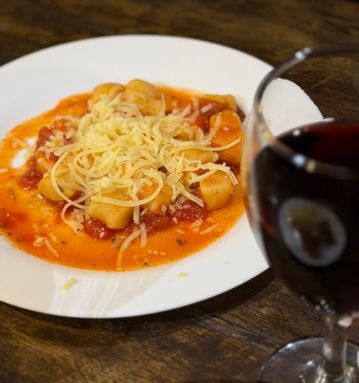

Buffet e churrasco todos os dias, feijoada aos sábados e Festival de Massas à noite. O restaurante da Av. Maringá que Londrina conhece pelo nome.
Churrasco todo dia, pratos quentes, saladas, carnes e massas. Variedade para todos os paladares.
Aos sábados e domingos, com a família, no salão que já virou tradição.
Uma noite de sabores para aproveitar sem pressa.

De terça a sábado, das 19h às 22h. Servido em voucher, com valor especial para a noite.
Valores válidos via voucher Cidade Oferta ou Filho da Mãe.
Reservar minha noite de massasSalve nossa programação e planeje a semana à mesa.
Buffet por quilo com churrasco feito na brasa todos os dias, saladas, pratos quentes e bacalhau. Das 11h30 às 15h.
Feijoada aos sábados, com opção de buffet livre a preço fixo.
Festival de Massas de terça a sábado, das 19h às 22h. Nas fotos: penne cremoso com brócolis e nhoque ao molho de tomate.
Buffet de sobremesas vendido por peso, ideal para fechar a refeição.
Reserve sua mesa e confirme o horário pelo WhatsApp.
O Casarão nasceu para ser ponto de encontro. Há 51 anos, famílias, amigos e colegas de trabalho se reúnem aqui, na Av. Maringá, 899, para almoçar, comemorar e conversar sem pressa.
Hoje o casarão serve buffet e churrasco todos os dias, feijoada aos sábados e Festival de Massas à noite, recebe casamentos e mantém o que sempre o fez especial: comida farta, salão acolhedor e gente que volta.
Falar com a genteTodos os dias, das 11h30 às 15h.
Aos sábados.
À noite, de terça a sábado.
O espaço também recebe casamentos.
E área externa aberta.
Para as crianças brincarem.
Todos os dias.
Agendamos no espaço.
O Casarão agenda casamentos no espaço, além de confraternizações, aniversários e encontros de família ou de trabalho, em um salão amplo com áreas interna e externa.
Estivemos no Restaurante Casarão para um almoço de sábado e a experiência foi positiva, especialmente pela organização e variedade. O local é amplo e muito bem dividido entre um salão interno climatizado e uma área externa mais aberta.
Tradicional restaurante em Londrina, onde o comer bem faz todo sentido. Muito frequentado aos finais de semana. Comida saborosa com muitas opções.
Veja o dia a dia do salão, os pratos e os clientes que fazem do Casarão o seu endereço de sempre.
Reservar minha mesaPreencha os dados e enviamos tudo pronto para o WhatsApp do restaurante.
Buffet de almoço de segunda a domingo, das 11h30 às 15h. Festival de Massas de terça a sábado, das 19h às 22h.
É uma noite de massas para aproveitar sem pressa. De terça a quinta o valor é R$ 29,90 e, na sexta e no sábado, R$ 34,90, via voucher Cidade Oferta ou Filho da Mãe.
Sim. Aos sábados e domingos, das 11h30 às 15h, temos o buffet especial. O churrasco é servido todos os dias.
Sim, aos sábados. Chame no WhatsApp para confirmar o horário e reservar sua mesa.
Pelo WhatsApp. Toque em qualquer botão desta página e envie o dia, o horário e o número de pessoas.
Sim, há um espaço kids na área externa do restaurante.
Sim. O Casarão agenda casamentos no espaço e também recebe eventos e grupos. Peça um orçamento pelo WhatsApp.
Av. Maringá, 899, em Londrina, Paraná.
Reserve pelo WhatsApp e chegue com a mesa garantida.
Endereço
Av. Maringá, 899, Londrina, PR
Almoço
Segunda a domingo, 11h30 às 15h
Festival de Massas
Terça a sábado, 19h às 22h
WhatsApp
(43) 3026-7710
Instagram
@ocasaraolondrina